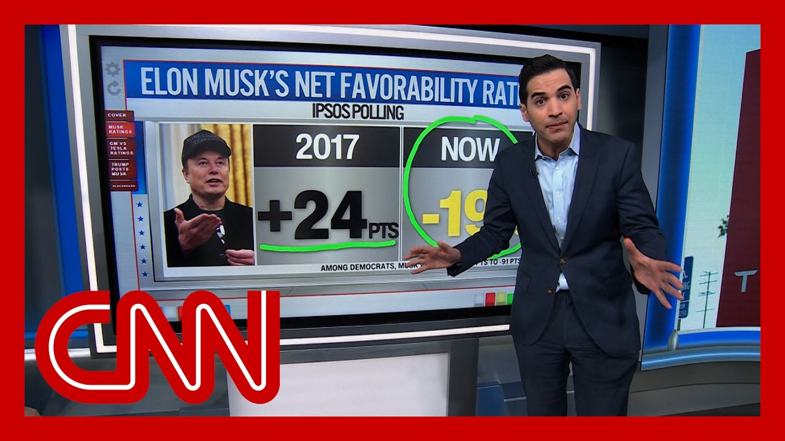

【他成了政治“氪石”：恩滕谈埃隆·马斯克的支持率】
Summary: Elon Musk plans to reduce political spending after record donations to Trump, as his and Tesla's favorability ratings plummet due to his political involvement.
摘要： 埃隆·马斯克在向特朗普破纪录捐款后计划减少政治支出，由于他的政治参与，他和特斯拉的支持率大幅下降。

⏱️ Estimated Reading Time: 15 min
So Elon Musk is now saying that he will be spending spending a lot less of his fortune on politics moving forward.
埃隆·马斯克现在表示，未来他将大幅减少在政治上的支出。
This came out yesterday in a new interview.
这一消息是在昨天的一次新采访中透露的。
So why is Musk making this shift?
那么，马斯克为何做出这一转变？
Now you'll remember Musk spent more than $290 million to help get President Trump and other Republicans elected.
你会记得，马斯克曾花费超过2.9亿美元帮助特朗普总统和其他共和党人当选。
Tesla, though, has struggled this year.
然而，特斯拉今年表现不佳。
Really, ever since Musk took a leading role in the Trump White House and began to lead his DOGE efforts.
实际上，自从马斯克在特朗普政府中担任重要角色并开始主导他的DOGE计划以来。
And now, Musk says he's going to spend more time at least the next few years.
而现在，马斯克表示他将在未来几年投入更多时间。
Still stay on as CEO of Tesla, something that Harry Enten decided he wanted to look at.
他仍将担任特斯拉CEO，这是哈里·恩滕决定要研究的事情。
What is behind this shift from Elon Musk?
马斯克这一转变的背后是什么？
What is behind it?
背后的原因是什么？
How unpopular is?
他有多不受欢迎？
How popular is he?
他有多受欢迎？
How low can you go?
还能低到什么程度？
Oh my.
天啊。
Okay, take a look here Elon Musk net favorability rating.
好吧，看看埃隆·马斯克的净支持率。
Look at this shift back in 2017 before he really started this politics thing.
看看2017年他真正开始涉足政治之前的转变。
He was at plus 24 points.
他的支持率为+24点。
Look at where he is now.
看看他现在的位置。
Whoa.
哇。
He fell through the floor.
他跌到了谷底。
-19 points among Democrats.
在民主党人中为-19点。
The fall was even more dramatic.
下跌甚至更为剧烈。
We're talking about going from plus 35 points on that favorability rating.
我们说的是从支持率+35点。
That is quite a popular guy among Democrats.
这在民主党人中相当受欢迎。
To get this now down to -91 points.
现在跌到了-91点。
You can't really go lower than that.
你不可能比这更低了。
I guess you could go down to -100 points.
我想你可以降到-100点。
But he became political Kryptonite.
但他成了政治“氪石”。
He was greatly disliked by the American public and greatly, greatly, greatly disliked by Democrats.
他非常不受美国公众欢迎，尤其是民主党人极其讨厌他。
And obviously we saw that in Wisconsin when, of course, he spent all that money.
显然，我们在威斯康星州看到了这一点，当时他花光了所有钱。
And then the liberal won that Supreme Court race.
然后自由派赢得了最高法院的竞选。
Yes.
是的。
How has that plummet of popularity impacted the brand?
这种支持率的暴跌如何影响了品牌？
Yeah.
是的。
Yeah.
是的。
Exactly.
没错。
Right.
对。
So this is Elon Musk individually.
所以这是埃隆·马斯克个人。
How about Tesla okay.
那特斯拉呢？
Let's take a look.
我们来看看。
The net favorability rating.
净支持率。
Look General Motors we're going to hear General Motors and Tesla.
看看通用汽车，我们会比较通用汽车和特斯拉。
General Motors quite well liked by the American people.
通用汽车非常受美国人欢迎。
Plus 23 points on that favorable rating.
支持率为+23点。
But look at Tesla -20 points.
但特斯拉是-20点。
So this idea that Tesla could somehow separate itself out from Elon Musk, the American people thought the exact same way.
所以特斯拉可以以某种方式与埃隆·马斯克分开的想法，美国人也这么认为。
And of course, Tesla is a business.
当然，特斯拉是一家企业。
They're in the business of selling cars.
他们从事的是卖车的业务。
Awfully difficult to sell cars when you have a -20 point net favorability rating, driven by Elon Musk's net favorability rating right around the same mark.
当你的净支持率为-20点，而埃隆·马斯克的支持率也差不多时，卖车非常困难。
And it's not a big surprise that Tesla sales had fallen in the past, at least in the first quarter, compared to where they were a year ago.
特斯拉的销量在过去（至少在第一季度）相比一年前有所下降，这并不令人意外。
It turns out that Elon Musk political Kryptonite was also becoming Kryptonite for selling cars.
事实证明，埃隆·马斯克的政治“氪石”也成了卖车的“氪石”。
So well, the and the one person maybe that matters to Elon Musk.
所以，也许对马斯克来说重要的一个人。
Maybe, well, other than his investors would be Donald Trump.
也许除了他的投资者之外，就是唐纳德·特朗普。
How is his Trump's view of him shifted?
特朗普对他的看法如何转变？
Yeah.
是的。
So you know we're talking about Tesla here.
所以你知道我们在这里谈论特斯拉。
But of course he's leaving the political game okay.
但他当然要退出政治游戏了。
Trump loved talking about Elon Musk at the beginning of his administration about Musk on Truth Social.
特朗普在他的政府初期喜欢在Truth Social上谈论马斯克。
Look at this from January 20th to April 4th.
看看1月20日到4月4日的数据。
He posted about 40 times.
他发了大约40次帖子。
Look from April 5th onward.
看看4月5日之后。
00000.
0次。
Donald Trump knows brands very well.
唐纳德·特朗普非常了解品牌。
He knows political brands and, you know, like Elon Musk, political brands.
他了解政治品牌，比如埃隆·马斯克这样的政治品牌。
Time had run out.
时间已经耗尽。
And therefore Elon Musk taking a step back from politics.
因此，埃隆·马斯克从政治中退后一步。
Also might be a favor to Elon Musk.
对马斯克来说也可能是件好事。
Yeah, I would think so.
是的，我也这么认为。
Much less about me while I'm trying to save my company.
在我试图拯救公司的时候，少谈政治。
Yeah, it seems pretty good.
是的，看起来不错。
Thank you so much.
非常感谢。
For putting a break on politics.
暂停政治活动。
Accelerating on Tesla Elon Musk says he plans to cut his political spending in the future after he spent a record sum to help get Donald Trump back in the White House.
加速发展特斯拉，埃隆·马斯克表示，在花费创纪录的资金帮助唐纳德·特朗普重返白宫后，他计划减少未来的政治支出。
The world's richest man has been shaking up the federal government through the so-called Department of Government Efficiency.
这位世界首富通过所谓的“政府效率部”一直在撼动联邦政府。
And now, he says he'll turn his attention back to Tesla and plans to leave the company for at least five more years.
而现在，他表示将把注意力转回特斯拉，并计划至少再留任五年。
CNN media correspondent Hadas Gold joins us now.
CNN媒体记者哈达斯·戈尔德现在加入我们。
Hadas, what more did Musk say about his plans?
哈达斯，马斯克还说了什么关于他的计划？
And it stuck out to me that he definitely kept the door open.
让我印象深刻的是，他确实留了余地。
He keeps the door open, but it's stunning to hear from the man who spent more than $290 million in 2024 to help elect President Trump and other Republicans, and then he spent millions more on that Wisconsin judge's race to now say, you know what?
他留了余地，但令人震惊的是，这位在2024年花费超过2.9亿美元帮助特朗普总统和其他共和党人当选，然后又花费数百万美元在威斯康星州法官竞选上的人现在说，你知道吗？
I'm done.
我结束了。
Take a listen to what he had to say.
听听他是怎么说的。
In terms of political spending.
关于政治支出。
I'm going to do a lot less in the future.
未来我会大幅减少。
And why is that?
为什么？
I think I've done enough.
我认为我已经做得够多了。
Is it?
是吗？
Is it because of blowback?
是因为反弹吗？
Well, if I see a reason to do political spending in the future, I will do it.
嗯，如果我未来看到有理由进行政治支出，我会做。
I do not currently see a reason.
目前我没有看到理由。
And I'm sure many Republicans hearing that will say, wait, wait, wait.
我肯定很多共和党人听到后会说，等等。
There is a reason we have a very slim majority in Congress.
我们在国会中只有微弱多数是有原因的。
We're going to need your help in the midterms.
我们需要你在中期选举中的帮助。
Now, as you noted, he did leave the door open.
正如你所指出的，他确实留了余地。
But there was, of course, the question of why is he suddenly changing his tune, when six months ago, you know, just a few months ago, he's brandishing a chainsaw on stage and seeing so energized about working in politics.
但当然，问题是为什么他突然改变态度，六个月前，你知道，就在几个月前，他还在舞台上挥舞电锯，对政治工作充满热情。
Now we can just look at the numbers.
现在我们可以看看数字。
First of all, we can look at the approval ratings for Elon Musk.
首先，我们可以看看埃隆·马斯克的支持率。
If you look at his approval ratings and polls back in February, his disapproval rating was at 49%.
如果你看看二月份的支持率和民调，他的反对率为49%。
In just a couple months, it jumped up to 57%, whereas his approval rating did not move at all.
仅仅几个月后，这一数字跃升至57%，而他的支持率完全没有变化。
And his his work in Washington has affected not only his personal approval ratings, but we've seen it affect Tesla's share price as well.
他在华盛顿的工作不仅影响了他个人的支持率，我们还看到它影响了特斯拉的股价。
I talked to somebody who has spoken to Elon Musk, who's in his orbit.
我和一个与马斯克交谈过的人谈过，他是马斯克圈子里的。
He said a few reasons why this is happening.
他说了几个原因。
He says Elon has too many assets coming to him and everyone sees him as a silver bullet spender.
他说马斯克有太多资产，每个人都把他视为“银弹”支出者。
He says that he warrants Elon Musk has not chosen his midterm bets yet, and he says he is sending a message to the market and his shareholders.
他说马斯克尚未选择中期选举的赌注，并表示他正在向市场和股东传递信息。
And as we saw from Tesla's share price, though, right there, Tesla's share prices have gone up ever since.
正如我们从特斯拉股价中看到的，自那以后，特斯拉的股价上涨了。
Elon Musk has said he's stepping back from politics, guys.
马斯克表示他正在退出政治，各位。
All right, Hadas Gold, thank you so much.
好的，哈达斯·戈尔德，非常感谢。
America's billionaires got a lot richer over the past year.
过去一年，美国的亿万富翁变得更富有了。
Must be nice.
一定很棒。
This, as Republicans on Capitol Hill are debating the president's tax and spending bill that could make the wealthiest Americans even more wealthy while leading to deep cuts in certain safety net programs.
与此同时，国会山的共和党人正在辩论总统的税收和支出法案，该法案可能让最富有的美国人更加富有，同时导致某些安全网计划的大幅削减。
Matt Egan here with the latest on this.
马特·伊根带来最新消息。
Good for those billionaires.
对那些亿万富翁来说是好事。
Yeah, John, it must be nice, as you said.
是的，约翰，一定很棒，如你所说。
But look, this really highlights America's inequality problem.
但你看，这确实凸显了美国的不平等问题。
Oxfam found that the top ten richest Americans got $365 billion richer in just the past year.
乐施会发现，过去一年中，美国最富有的十人财富增加了3650亿美元。
Now, this measures their net worth from April 2024 to April 2025.
这是从2024年4月到2025年4月的净资产测量。
And this, of course, comes despite the fact that there was that scary market drop earlier this year.
当然，尽管今年早些时候市场出现了可怕的下跌。
This amounts to these billionaires gaining $1 billion collectively each day, which is pretty stunning.
这相当于这些亿万富翁每天集体增加10亿美元，这相当惊人。
And to put a finer point on things here, Oxfam also found that it would take ten typical workers, making median earnings 726,000 years to make $365 billion.
更具体地说，乐施会还发现，十个典型工人需要工作72.6万年（按中位数收入计算）才能赚到3650亿美元。
It's kind of a mindblowing stat there.
这是一个令人震惊的数据。
Now, as far as who got richer.
至于谁变得更富有。
The top ten list includes legendary investor Warren Buffett.
前十名包括传奇投资者沃伦·巴菲特。
He got $35 billion richer over the last year.
过去一年，他的财富增加了350亿美元。
Jim Walton and Rob Walton, the Walmart heirs, almost $40 billion, $39 billion from Mark Zuckerberg.
沃尔玛继承人吉姆·沃尔顿和罗布·沃尔顿增加了近400亿美元，马克·扎克伯格增加了390亿美元。
But far and away.
但遥遥领先的是。
This list, of course, is led, not surprisingly, by Elon Musk, who got $186 billion richer in again
这份名单的领头人当然是埃隆·马斯克，他的财富又增加了1860亿美元。
So I asked the White House about these findings and concerns about inequality and a spokesperson argued that wealth inequality got better during Trump's first term, and that this legislation being debated by House Republicans would restore prosperity for Main Street.
因此，我就这些发现和不平等问题询问了白宫，一位发言人辩称，财富不平等在特朗普的第一个任期内有所改善，而众议院共和党人正在辩论的这项立法将为普通民众恢复繁荣。
But John, nonpartisan experts, they're warning that this legislation would in fact make the rich even richer, while simultaneously cutting almost $1 trillion from Medicaid and food stamps.
但约翰，无党派专家警告说，这项立法实际上会让富人更富，同时从医疗补助和食品券中削减近1万亿美元。
Well, and overnight, we got a new score about how much this legislation will cost.
嗯，一夜之间，我们得到了关于这项立法成本的新评分。
Yeah, a lot of money.
是的，很多钱。
This is coming from the nonpartisan Congressional Budget Office.
这是来自无党派的国会预算办公室。
They're finding that this legislation would add almost $4 trillion in debt over a decade.
他们发现，这项立法将在十年内增加近4万亿美元的债务。
this comes completely contradicting what the White House said just the other day, arguing that this would not add to the deficit.
这与白宫前几天所说的完全矛盾，白宫辩称这不会增加赤字。
Keep in mind, this would just add to the mountain of debt that the U.S. already has.
请记住，这将只是增加美国已经堆积如山的债务。
Now, that's, of course, a bipartisan problem.
当然，这是一个两党问题。
Republicans and Democrats alike, and share some blame.
共和党人和民主党人都应承担部分责任。
But this debate over the House GOP tax cuts, it's coming at a time when there's growing concerns about the fiscal mess rate.
但关于众议院共和党减税政策的辩论，正值人们对财政混乱率的担忧日益加剧之际。
Moody's just the other day cut America's perfect credit rating.
穆迪前几天刚刚下调了美国的完美信用评级。
And there are these concerns that this would also add to inequality.
还有人担心这会加剧不平等。
This is the nonpartisan Penn Wharton budget model.
这是无党派的宾夕法尼亚大学沃顿预算模型。
They say that the top 10% of earners would get 65% of the gains here, and the bottom 20%, they would lose $1,000 each next year due to these cuts to Medicaid.
他们表示，收入最高的10%将获得这里65%的收益，而收入最低的20%明年将因医疗补助削减每人损失1000美元。
And also food stamps.
以及食品券。